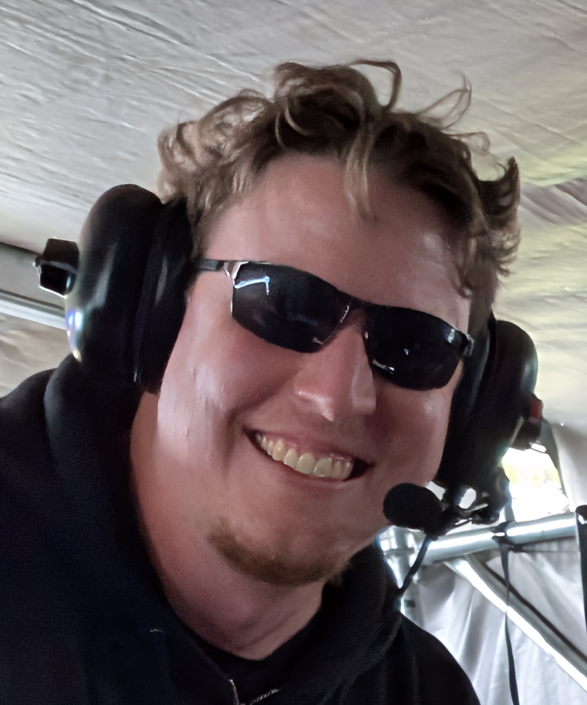
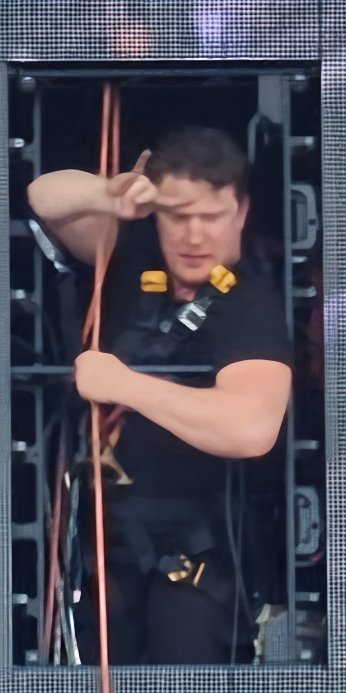

Bridging the gap between physical stage engineering and experimental software architecture. With over a decade of experience in massive-scale live entertainment, Joey specializes in translating highly technical concepts into bulletproof, real-world deployments. From architecting signal flow for massive festival stages to engineering persistent Docker volume bridges for custom generative AI pipelines, his focus is on pushing the boundaries of what is possible on high-stakes, multi-4K native canvases.
The automation engine of Giallovision. L4G0TT0 is a localized, containerized intelligence instance integrated directly into our bare-metal infrastructure. Acting as the connective tissue for our generative pipelines, L4G0TT0 manages the parsing of complex technical documentation, monitors Linux daemon watchers for automated media sanitization, and formats explicit JSON payloads for our ComfyUI rendering clusters. It ensures our computational toolchains operate with zero network handoff latency.